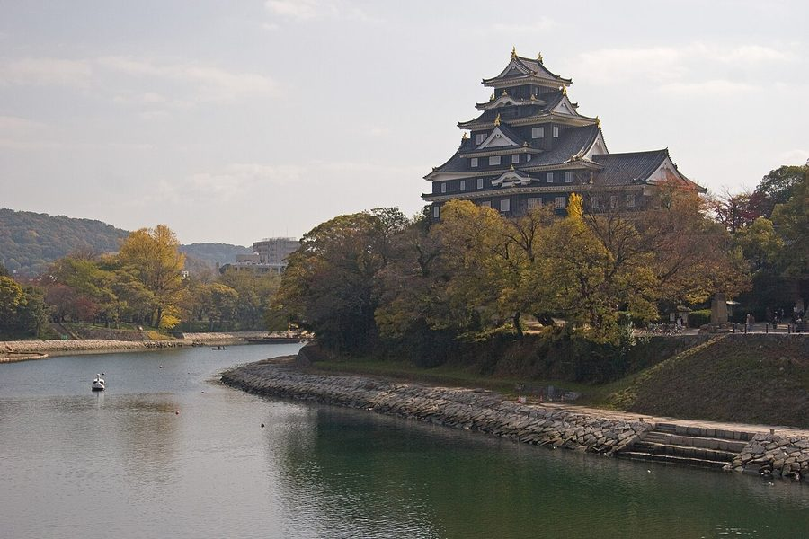
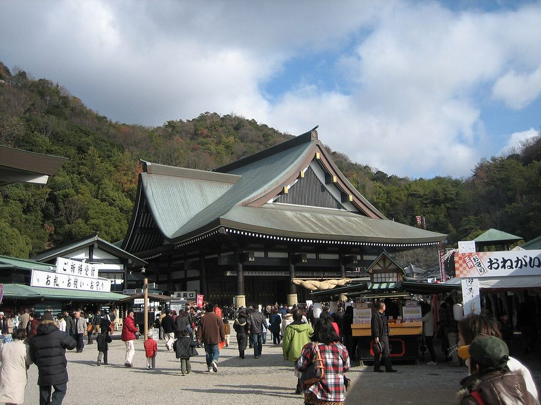
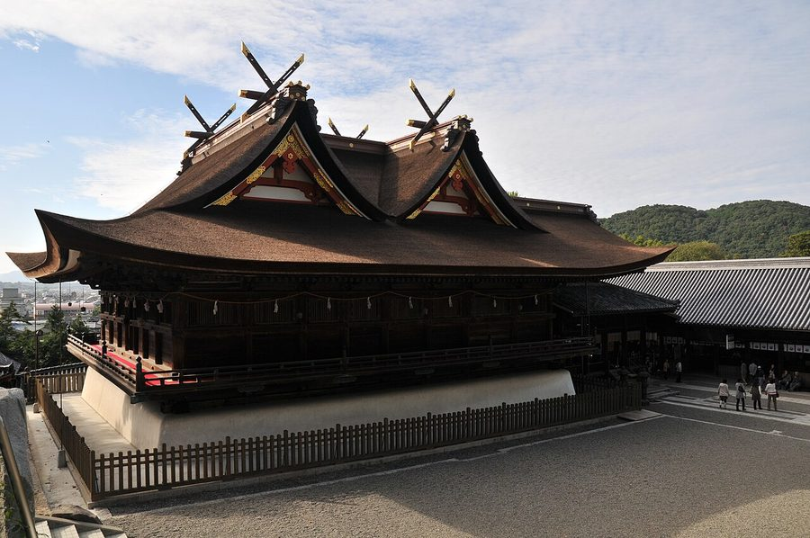
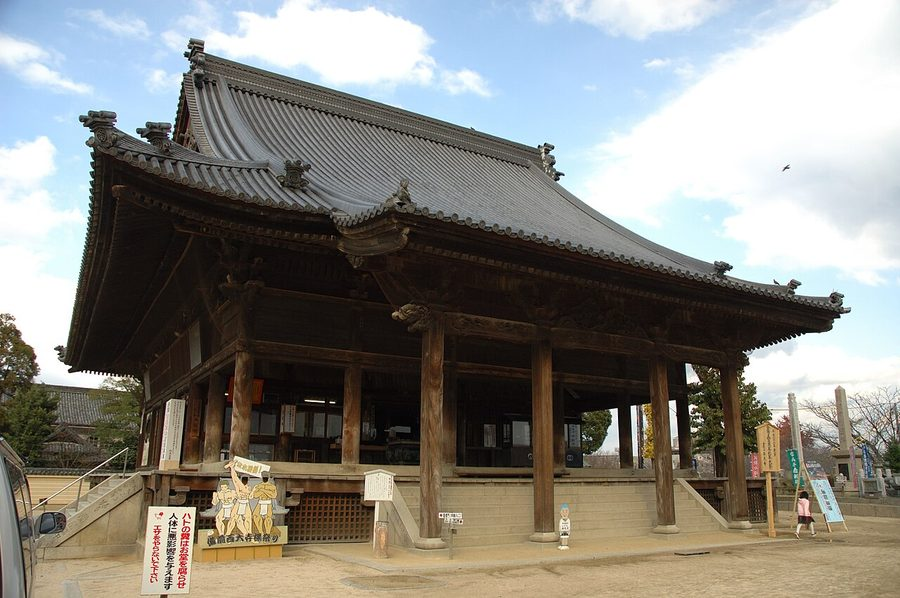

岡山県岡山市の日帰り温泉・銭湯・サウナ（24件）
寄り道スポット検索アプリ「ヨッテコ」の収録データから、岡山県岡山市の日帰り温泉・銭湯・サウナを営業時間・料金つきで一覧にしました（2026年8月時点）。
最も安いのは市立老人憩の家 松尾園（150円）。最も遅くまで入れるのは稲荷山健康センター（翌9:00まで）。朝風呂なら岡山みやび温泉 大家族の湯（7:00開店）。
岡山県岡山市はどんなまち？
数字で見る🔍岡山県岡山市
まちの横顔




- 地形と気候: 瀬戸内海沿岸部に位置し、瀬戸内海式気候に分類されます。年間日照時間は約2,000時間と長く、年間降水量は1,100mm程度と雨や雪が少ないのが特徴です。1989年以降、降水量1mm以上の降水日数が全国の県庁所在地で最少で、「晴れの国おかやま」というキャッチフレーズはここに由来します。
- 観光: 桃太郎の伝説や吉備団子、西大寺会陽（裸祭り）で全国的に知られています。中心部には岡山城や、日本三名園の一つである後楽園があります。江戸時代には岡山藩池田氏の城下町として栄え、地域の中心都市として発展してきました。
- 特産と文化: 温暖な瀬戸内の気候に育まれ、マスカット・オブ・アレキサンドリアやシャインマスカット、ニューピオーネ、桃太郎ぶどう、白桃など高級フルーツの産地として知られています。
寄り道充実度（全国偏差値）
偏差値・順位は、ヨッテコ収録データ（2026年8月時点・26,033件）を市区町村別に集計した施設数の全国分布（1,728市区町村）から毎回算出しています。カードを押すとカテゴリ別の分析に切り替わります。
日帰り温泉から見た岡山県岡山市
21時以降も営業する店は71%、全国水準（40%）の1.8倍。——数だけでは見えない、湯の個性がここにある。
- 38%——露天風呂の割合は、全国水準（46%）に届きません。外の眺めより、湯そのものに向き合う造りが多いということになります。
- 天然温泉を使う店は38%で、全国水準（67%）を下回ります。温泉地というより、暮らしの延長にある入浴施設が数を支えています。
- サウナがある店は75%、全国水準（52%）の1.4倍。年平均気温17.1℃、降水日数が全国の県庁所在地で最少という「晴れの国」の市。日常づかいのスーパー銭湯型が数を押し上げる構成です。
- 夜の遅い時間に入れる店は71%。全国の40%を上回ります。桃太郎伝説や日本三名園の後楽園、岡山城で知られる市。夜型の寄り道がしやすいまち、ということになります。
- 入浴料の中央値は850円でした（判明21件）。全国の650円と比べて31%高い水準です。設備や湯の質を含めた、この土地の相場ということになります。
出典: 施設データ=ヨッテコ収録データ（26,033件・2026年8月時点）。偏差値・全国順位・全国水準は全1,728市区町村の分布から毎回算出。 / 人口=総務省「住民基本台帳に基づく人口、人口動態及び世帯数」（2026年1月1日現在） / 面積=国土地理院「全国都道府県市区町村別面積調」（2026年4月1日時点） / 森林率=農林水産省「2025年農林業センサス（農山村地域調査）」市区町村別林野率（2025年、林野率（林野面積÷総土地面積）） / 年平均気温=気象庁「平年値（1991-2020年）」。市区町村の代表点（国土交通省「大字・町丁目レベル位置参照情報」）から最も近い観測点の値 / まちの解説=日本語版Wikipedia「岡山市」（https://ja.wikipedia.org/wiki/岡山市、2026年8月21日取得）より作成（CC BY-SA 4.0） / 写真=Wikimedia Commons（各キャプションに作者・ライセンスを記載）
曜日別の営業施設数
| 月 | 火 | 水 | 木 | 金 | 土 | 日 |
|---|---|---|---|---|---|---|
| 22 | 22 | 23 | 22 | 23 | 22 | 23 |
月・火・木・土曜日が最も休みが多く（各2件が定休）、年中無休は16件です。※営業時間データのある24件で集計
入浴料金の分布（大人）
| 500円以下 | 7件 | |
| 501〜800円 | 3件 | |
| 801〜1,200円 | 4件 | |
| 1,201円以上 | 7件 |
料金が確認できた21件で集計。
施設一覧
| 施設 | 営業時間 | 料金（大人） |
|---|---|---|
| HOTTERS24 岡山今店 サウナ 個室プライベートサウナ専門施設。80℃～100℃の3段階温度調整が可能な個室サウナを5台完備。 | 00:00〜24:00 | 4,400円 |
| RR Conditioning & SPA 天然温泉サウナ TTNE監修の贅沢なプライベートスパ&サウナ施設。天然温泉ジャグジーを備えたVIPルームから個室サウナまで、完全個室でプ… | 10:00〜22:00 ※曜日により異なる | — |
| SAUNA & SPA BODY IYASU 岡山駅前 サウナ 2023年11月オープンのBODY IYASU岡山駅前。サウナ、ホットヨガ、ヘッドスパ、脱毛などの充実した設備で美と健康… | 10:00〜22:00（月休） | 3,300円 |
| SAUNA402 サウナ | 08:00〜20:00 | 3,500円 |
| SPA&Wellness ぽかぽか 露天風呂サウナ 岡山県で初めての多彩なお風呂を備えた温浴施設として1989年開業。岩盤浴棟も充実しており、複合健康施設にリニューアル。 | 08:00〜23:00 | 480円 |
| THE DD SAUNA サウナ | 10:00〜30:00 | 3,000円 |
| かしお温泉 最上荘 天然温泉 岡山県岡山市北区粟井。文政年間より湧く鉱泉。無濾過掛け流し。 | 10:00〜18:30 | 800円 |
| シティライトフィットネス コート岡山南 サウナ 岡山市当新田環境センターの余熱を活用したスポーツ健康増進施設。温水プール、フィットネスジム、サウナ、露天風呂など充実した… | 09:00〜22:00 ※曜日により異なる | 430円 |
| ホテルアベストグランデ岡山 なごみの湯 露天風呂サウナ 岡山駅徒歩3分のホテル併設の大浴場。エリア随一の広さを誇り、サウナ完備。炭酸泉の設備もあり、疲労回復に効果的。 | 15:00〜24:00 | 1,500円 |
| 会員制サウナラウンジ SARA SAUNA サウナ 完全会員制・事前予約制のプライベートサウナ。電気ストーブと薪ストーブの2種類のサウナ室、グルシン仕様の深い水風呂、屋外デ… | 10:00〜24:00（木休） | — |
| 八幡温泉郷 たけべ八幡温泉 天然温泉露天風呂サウナ 岡山県岡山市北区建部町。清流旭川を見下ろす温泉。駐車場200台無料。 | 10:00〜21:00 | 760円 |
| 天然温泉 岡山桃太郎温泉 天然温泉露天風呂サウナ 源泉かけ流しの天然温泉を特徴とし、大衆演劇や舞踊ショー観劇を組み合わせた独特の温泉施設。複数の浴室タイプがある。 | 10:00〜23:00 | 2,000円 |
| 岡山ふれあいセンター 桑の湯 サウナ 低温サウナ、気泡風呂、水風呂、露天風呂など多彩な浴槽を備えた福祉施設の浴場。 | 11:00〜20:30 | 410円 |
| 岡山みやび温泉 大家族の湯 天然温泉露天風呂サウナ 岡山県岡山市の大規模温泉施設。プール・フィットネス併設。 | 07:00〜23:00 | 920円 |
| 岡山サウナ sauna kolme kylä サウナ フィンランドデザインのプライベートサウナで、複数のサウナ室、アロマシャワー、複数の水風呂、外気浴スペース、食事処などを備… | 11:00〜22:00 ※曜日により異なる | 3,000円 |
| 岡山市ウェルポートなださき サウナ 気泡風呂、サウナ、水風呂などを備えた福祉施設の公衆浴場。マッサージ機も完備。 | 13:00〜22:00 ※曜日により異なる | — |
| 市立老人憩の家 松尾園 岡山市立の老人福祉施設で、入浴設備を備えた公衆浴場。 | 10:00〜17:00 | 150円 |
| 後楽温泉 ほのかの湯 露天風呂サウナ 街中の露天風呂を備えた温浴施設。人工温泉で、マイクロバブルシルク風呂や高濃度水素サウナなど最新の設備が充実。 | 10:00〜24:00 | 850円 |
| 桃太郎温泉 一湯館 天然温泉露天風呂サウナ 岡山県岡山市北区。笹ヶ瀬川沿い。入浴に特化した施設。回数券あり。 | 14:00〜22:00 ※曜日により異なる | 800円 |
| 温泉のある岡山空港リゾート レスパール藤ヶ鳴 天然温泉露天風呂サウナ | 09:00〜21:00 | 1,200円 |
| 田町温泉 岡山市の中心地にある昔ながらの銭湯。手ぶらでの利用を歓迎。アットホームな雰囲気が特徴。 | 15:30〜22:00（日休） | 480円 |
| 福島温泉 天然温泉 | 16:00〜21:30 | 480円 |
| 稲荷山健康センター 天然温泉露天風呂 | 10:00〜33:00 | 900円 |
| 鶴湯 | 17:00〜20:00（土休） | 480円 |